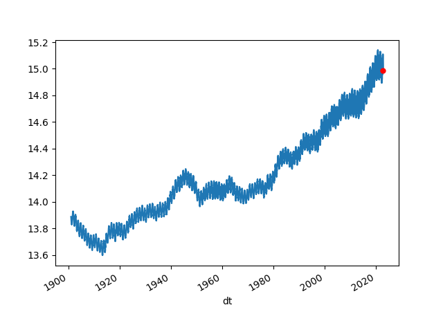
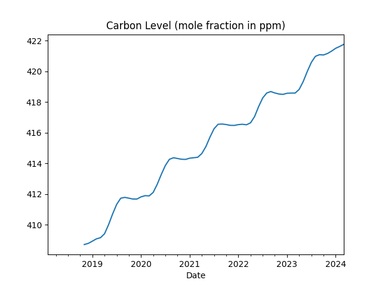
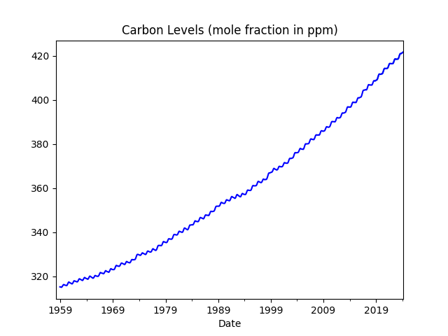
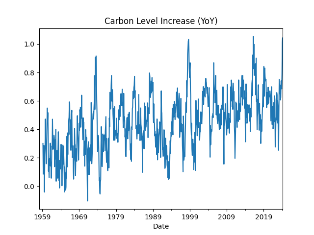
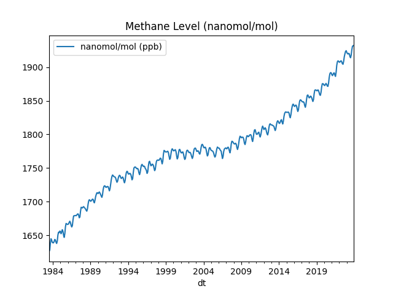
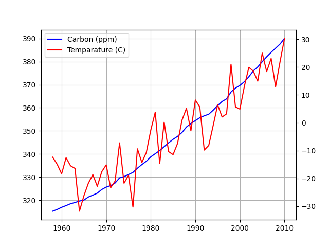

Temperature Increase
The feared 1.5 C increase is reported relative to a global mean temperature between years 1850-1890 which was roughly 13.6°C.
Berkeley Data
The most basic plot looks at Earth's average temparature. We use data from Berkeley, this data is as raw as its gets, looked at the "Land + Ocean (1850 – Recent)" section and used the "Monthly Global Average Temperature (annual summary)" data.
import pandas as pd
anoms = [12.23, 12.45, 13.06, 13.98, 14.95, 15.67, 15.96, 15.79, 15.20, 14.26, 13.24, 12.50]
anoms = np.array(anoms)
df = pd.read_csv('http://berkeleyearth.lbl.gov/auto/Global/Land_and_Ocean_complete.txt',delim_whitespace=True,comment='%',header=None)
df = df[[0,1,2]]
df.columns = ['year','month','anom']
# data reprsents temp as a combo of base val plus an 'anomaly'
df['temp'] = df.anom + anoms[df.month.astype(int) - 1]
df['dt'] = df.apply(lambda x: pd.to_datetime("%d-%02d-01" %(x.year,x.month)), axis=1)
df1 = df.set_index('dt')
df1 = df1.rolling(70).mean()
df1 = df1.dropna()
df1 = df1[df1.index > '1901-01-01']
df1.temp.plot()
print (df1.tail(5)[['temp','tempyoy']])
df1.temp.tail(1).plot(style='r.',markersize=10)
df1['tempyoy'] = (df1.temp - df1.temp.shift(12)) / df1.temp.shift(12) * 100.0
df1['temp'].to_csv('global_temperature.csv')
plt.savefig('berkeley-temp.png')
temp tempyoy
dt
2022-08-01 14.927229 -0.137335
2022-09-01 14.955557 -0.126215
2022-10-01 14.981657 -0.100308
2022-11-01 14.991786 -0.106611
2022-12-01 14.988243 -0.097030

Increase is quite visible. The Berkeley dataset is updated monthly.
Let's continue with statistical tests. Is the temparature increase real? There are many methods we can use here; Within the context of pure time series methods, the best chance of climate change deniers had was arguing that temperature time series data could be random walk. Example for RW is stock price movement where values "can go up or down, in an unpredictable fashion". So deniers try to chalk up the temperature increase in the past 70 years to this kind of movement. They cannot even argue variations of random walk BTW, it has to be pure random walk, if there is a drift, or a trend there (indicating up movement) they are screwed.
It turns out they are statistical tests for that. We used dataset from GISS, temperature anomalies between 1880-2010 are captured here (anomalies are relative to the 1951-80 base period means). We used ADF test, the implementation we used is able to test for combination of hypothesis' -- pure RW, no pure RW no drift no trend, etc. Well, the test shows GISS data is not pure random walk, it is random walk with a trend (trend stationarity).
At this point deniers can try to shift gears and argue for mean-reversion (opposite of random walk), "what goes up must come down and vice versa" surely there is a certain amount of mean-reversion in this data. Traders love mean-reversion by the way, and if you could trade on temperature data wouldn't you? Hell yeah! Buy low in the winter, sell high in the summer. But the deniers can never prove full-mean reversion on this data, and since the ADF test blew through all threshold values all indicators are screaming out a trend.
There are other methods as well, such as cointegration, that took care of the attribution part of the equation. That final analysis was the one that truly sealed the deal. It is game-over for the deniers.
ACF / PACF
Here we use temparature anomaly data from GISS, anomalies are relative to the 1951-80 base period means.
import statsmodels.api as sm
import pandas as pd
dfclim = pd.read_csv('climate-giss.csv',index_col=0,parse_dates=True)
plt.hold(True)
sm.graphics.tsa.plot_acf(dfclim.Temp.values.squeeze(), lags=50)
plt.savefig('climate_02.png')
plt.hold(False)

import statsmodels.api as sm
plt.hold(True)
sm.graphics.tsa.plot_pacf(dfclim.Temp, lags=50)
plt.savefig('climate_03.png')
plt.hold(False)

Dickey Fuller Tests
%load_ext rpy2.ipython
%R library(urca)
series = dfclim.Temp
%R -i series
%R adf <- ur.df(series, type = 'trend',selectlags="AIC")
%R -o adfout adfout <- summary(adf)
print adfout
###############################################
# Augmented Dickey-Fuller Test Unit Root Test #
###############################################
Test regression trend
Call:
lm(formula = z.diff ~ z.lag.1 + 1 + tt + z.diff.lag)
Residuals:
Min 1Q Median 3Q Max
-80.967 -9.868 0.214 10.370 85.279
Coefficients:
Estimate Std. Error t value Pr(>|t|)
(Intercept) -10.578706 1.163642 -9.091 <2e-16 ***
z.lag.1 -0.277517 0.020894 -13.282 <2e-16 ***
tt 0.014425 0.001428 10.105 <2e-16 ***
z.diff.lag -0.224780 0.024657 -9.116 <2e-16 ***
---
Residual standard error: 16.81 on 1562 degrees of freedom
Multiple R-squared: 0.2205, Adjusted R-squared: 0.219
F-statistic: 147.3 on 3 and 1562 DF, p-value: < 2.2e-16
Value of test-statistic is: -13.2819 58.8243 88.2169
Critical values for test statistics:
1pct 5pct 10pct
tau3 -3.96 -3.41 -3.12
phi2 6.09 4.68 4.03
phi3 8.27 6.25 5.34
import statsmodels.api as sm
arima_mod1 = sm.tsa.ARIMA(dfclim.Temp, (1,1,2)).fit()
print arima_mod1.aic
13238.7766703
arima_mod2 = sm.tsa.ARIMA(df.Temp, (2,0,1)).fit()
print arima_mod2.aic
13277.4918251
import statsmodels.api as sm
dfclim = pd.read_csv('climate.csv',sep='\s*',header=None,names=['Temp'])
df = dfclim.copy()
df.index = pd.Index(sm.tsa.datetools.dates_from_range('1880m1', '2010m8'))
df.to_csv('climate2.csv')
print dfclim.head(4)
Temp
0 -42
1 -17
2 -21
3 -33
from numpy import log, polyfit, sqrt, std, subtract
def hurst(ts):
lags = range(2, 100)
tau = [sqrt(std(subtract(ts[lag:], ts[:-lag]))) for lag in lags]
poly = polyfit(log(lags), log(tau), 1)
return poly[0]*2.0
print hurst(dfclim.Temp)
0.040611546891
Carbon Levels In the the Atmosphere
Units are mole fraction in ppm, per month
import urllib.request as urllib2, io
import pandas as pd
url = "ftp://aftp.cmdl.noaa.gov/products/trends/co2/co2_mm_mlo.txt"
r = urllib2.urlopen(url).read()
file = io.BytesIO(r)
df = pd.read_csv(file,comment='#',header=None,sep='\s*')
df['Date'] = df.apply(lambda x: str(int(x[0])) + "-" + str(int(x[1])) + "-1", axis=1)
df['Date'] = pd.to_datetime(df.Date)
df['ppm'] = df[3]
df = df.set_index('Date')
df[df.index > "2018-01-01"]['ppm'].rolling(10).mean().plot(title='Carbon Level (mole fraction in ppm)')
plt.savefig('carbon.png')
df['ppm'].rolling(10).mean().plot(color='blue',title='Carbon Levels (mole fraction in ppm)')
print (df.ppm.tail(5))
plt.savefig('carbon2.png')
Date
2023-11-01 420.46
2023-12-01 421.86
2024-01-01 422.80
2024-02-01 424.55
2024-03-01 425.38
Name: ppm, dtype: float64

Longer time span, since the 50s

Monthly Carbon YoY Increase
df['ppmyoy'] = (df.ppm - df.ppm.shift(12)) / df.ppm.shift(12) * 100.0
print (df['ppmyoy'].dropna().head(4))
print (df['ppmyoy'].tail(4))
print (df['ppmyoy'].dropna().mean())
Date
1959-03-01 0.300919
1959-04-01 0.085053
1959-05-01 0.245662
1959-06-01 0.286849
Name: ppmyoy, dtype: float64
Date
2023-12-01 0.684981
2024-01-01 0.791456
2024-02-01 1.011182
2024-03-01 1.042780
Name: ppmyoy, dtype: float64
0.44902725303018143
df['ppmyoy'].plot(title="Carbon Level Increase (YoY)")
plt.savefig('carbon3.png')

Methane Levels In the the Atmosphere
Data comes from NOAA units are nanomol/mol, abbreviated as ppb.
cols = ['year','month','decimal','average','average_unc','trend','trend_unc']
url = "https://gml.noaa.gov/webdata/ccgg/trends/ch4/ch4_mm_gl.txt"
import pandas as pd
df = pd.read_csv(url,comment='#',sep='\s*',header=None)
df.columns = cols
df = df.set_index('decimal')
df['dt'] = df.apply(lambda x: pd.to_datetime("%d-%02d-01" %(x.year,x.month)), axis=1)
df[['dt','average']].to_csv('methane.csv',index=None)
df1 = df.set_index('dt')
df1.average.plot(title='Methane Level (nanomol/mol)')
print (df1.average.tail(6))
plt.legend(['nanomol/mol (ppb)'])
plt.savefig('methane.png')
dt
2023-07-01 1914.10
2023-08-01 1918.07
2023-09-01 1925.64
2023-10-01 1931.03
2023-11-01 1932.05
2023-12-01 1932.23
Name: average, dtype: float64

Carbon and Temperature
Plotted carbon levels in the atmosphere and global temperature, trying to gauge a relation between the two. Carbon data comes from here.
import urllib.request as urllib2, io
import pandas as pd
url = "ftp://aftp.cmdl.noaa.gov/products/trends/co2/co2_mm_mlo.txt"
r = urllib2.urlopen(url).read()
file = io.BytesIO(r)
df = pd.read_csv(file,comment='#',header=None,sep='\s*')
df['dt'] = df.apply(lambda x: pd.to_datetime("%d-%02d-01" %(x[0],x[1])), axis=1)
df[['dt',3]].to_csv('carbon.csv',index=None)
g1 = df.groupby(0)[3].mean()
dfc = pd.read_csv('climate-giss.csv',index_col=0,parse_dates=True)
dfc['year'] = dfc.apply(lambda x: x.name.year,axis=1)
dfc['mon'] = dfc.apply(lambda x: x.name.month,axis=1)
dfc['TempC'] = ((dfc.Temp-32)*5.0)/9.0
g2 = dfc.groupby('year')['TempC'].mean()
g = pd.concat([g1, g2], axis=1).dropna()
g.columns = ['Carbon','Temparature']
ax1 = g['Carbon'].plot(color='blue', grid=True, label='Carbon (ppm)')
ax2 = g['Temparature'].plot(color='red', grid=True, label='Temparature (C)',secondary_y=True)
h1, l1 = ax1.get_legend_handles_labels()
h2, l2 = ax2.get_legend_handles_labels()
plt.legend(h1+h2, l1+l2, loc=2)
plt.savefig('carbontemp.png')

Strong correlation, but does that mean causation?
Running a Granger causality test, which tries to reject the hypothesis that second time series (carbon) does not cause the first series (temperature).
import statsmodels.tsa.stattools as t
res = t.grangercausalitytests(g[['Temparature','Carbon']],maxlag=3)
print (res)
Granger Causality
number of lags (no zero) 1
ssr based F test: F=34.1256 , p=0.0000 , df_denom=49, df_num=1
ssr based chi2 test: chi2=36.2149 , p=0.0000 , df=1
likelihood ratio test: chi2=27.4837 , p=0.0000 , df=1
parameter F test: F=34.1256 , p=0.0000 , df_denom=49, df_num=1
Granger Causality
number of lags (no zero) 2
ssr based F test: F=11.4685 , p=0.0001 , df_denom=46, df_num=2
ssr based chi2 test: chi2=25.4301 , p=0.0000 , df=2
likelihood ratio test: chi2=20.6321 , p=0.0000 , df=2
parameter F test: F=11.4685 , p=0.0001 , df_denom=46, df_num=2
Granger Causality
number of lags (no zero) 3
ssr based F test: F=5.3519 , p=0.0032 , df_denom=43, df_num=3
ssr based chi2 test: chi2=18.6695 , p=0.0003 , df=3
likelihood ratio test: chi2=15.8641 , p=0.0012 , df=3
parameter F test: F=5.3519 , p=0.0032 , df_denom=43, df_num=3
{1: ({'ssr_ftest': (34.12560659900744, 4.0997667759058264e-07, 49.0, 1), 'ssr_chi2test': (36.214929452007894, 1.7671160136200755e-09, 1), 'lrtest': (27.483689910062537, 1.584249217215468e-07, 1), 'params_ftest': (34.12560659900759, 4.099766775905632e-07, 49.0, 1.0)}, [<statsmodels.regression.linear_model.RegressionResultsWrapper object at 0x7f54b4946518>, <statsmodels.regression.linear_model.RegressionResultsWrapper object at 0x7f54b4946630>, array([[0., 1., 0.]])]), 2: ({'ssr_ftest': (11.468479812558117, 9.099787320501968e-05, 46.0, 2), 'ssr_chi2test': (25.43010741045496, 3.005538798970397e-06, 2), 'lrtest': (20.632104155556192, 3.309752413988568e-05, 2), 'params_ftest': (11.468479812556222, 9.099787320513459e-05, 46.0, 2.0)}, [<statsmodels.regression.linear_model.RegressionResultsWrapper object at 0x7f54b4946898>, <statsmodels.regression.linear_model.RegressionResultsWrapper object at 0x7f54b49469b0>, array([[0., 0., 1., 0., 0.],
[0., 0., 0., 1., 0.]])]), 3: ({'ssr_ftest': (5.351917020399335, 0.003196324450636187, 43.0, 3), 'ssr_chi2test': (18.669477978137216, 0.0003199702464963456, 3), 'lrtest': (15.864090764221487, 0.0012091064117637019, 3), 'params_ftest': (5.351917020398325, 0.0031963244506395256, 43.0, 3.0)}, [<statsmodels.regression.linear_model.RegressionResultsWrapper object at 0x7f54b4946c50>, <statsmodels.regression.linear_model.RegressionResultsWrapper object at 0x7f54b4946d68>, array([[0., 0., 0., 1., 0., 0., 0.],
[0., 0., 0., 0., 1., 0., 0.],
[0., 0., 0., 0., 0., 1., 0.]])])}
The hypothesis is rejected at a very strong level. Carbon content in atmo did cause a global increase in temperature.
Carbon, Methane Effects
Carbon or methane.. which one caused more global temperature increase? Below is the correlation matrix between all three time series', temperature, carbon, and methane levels.
import pandas as pd
df1 = pd.read_csv('global_temperature.csv',index_col='dt',parse_dates=True)
df1 = df1.rolling(50).mean()
df2 = pd.read_csv('carbon.csv',index_col='dt',parse_dates=True)
df3 = pd.read_csv('methane.csv',index_col='dt',parse_dates=True)
df4 = pd.merge(df1,df2,left_index=True, right_index=True,how='left')
df5 = pd.merge(df4,df3,left_index=True, right_index=True,how='left')
df5 = df5.interpolate(method='linear',limit_direction='backward')
df5.columns = ['temp','carbon','methane']
print (df5.corr())
temp carbon methane
temp 1.000000 0.497317 0.489216
carbon 0.497317 1.000000 0.974705
methane 0.489216 0.974705 1.000000
Carbon and methane equally contributed to global warming.